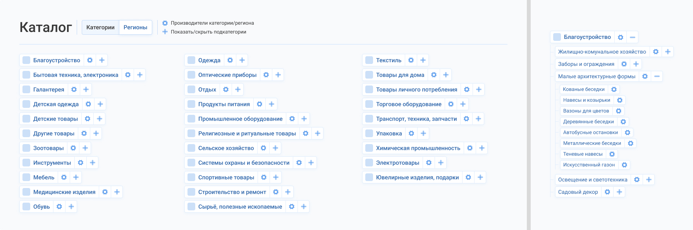
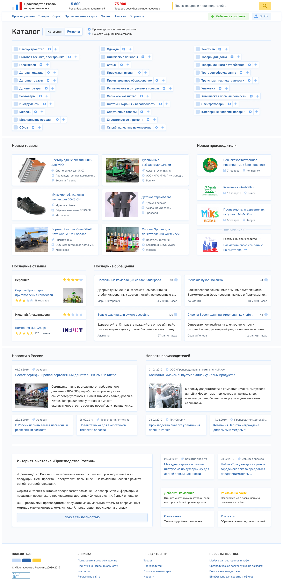
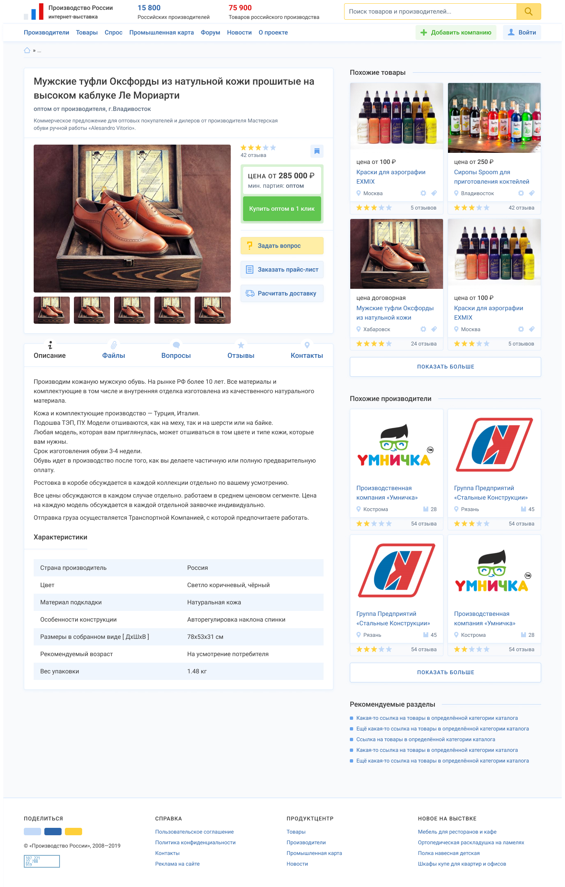

Всего на главной выходит аж 6 каталогов...
Сейчас на главной есть 2 выподающих каталога (товары/производитеи) при наведении на ссылки в меню.
Их надо убрать из изначальной загрузке страницы, а при наведении на пункты меню подгружать через Ajax (это к Денису).
Далее основной катлог, тут каталог товаров по категориям, каталог товаров по регионам и аналогично для производителей.
Если упрастить показ производителей, т.е. не копией названием, а только ссылкой, тогда уберём 2 копии табов с одинаковыми названиями категорий и регионов (различие же только в ссылке). Оставить ссылку на производитей конкретной категории/подкатегории и региона/города ввиде ссылки-иконки.
Ещё, как вариант можно сделать отдельную страницу с каталогом, как на главной и, если человек с телефона, то в меню указать ссылку на каталог. Потому что сейчас с телефона каталог увидеть можно только на главной странице.
Пример, как выглядит на главной каталог.
Такой вариант дизайна полной карточки.
